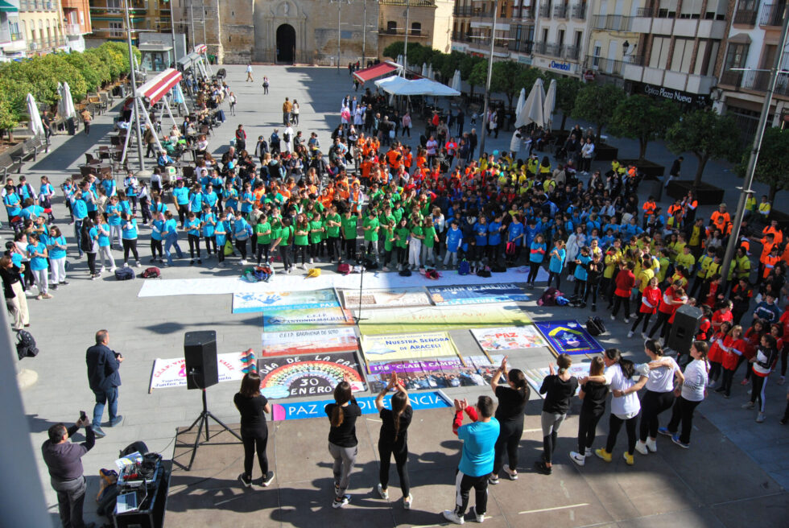
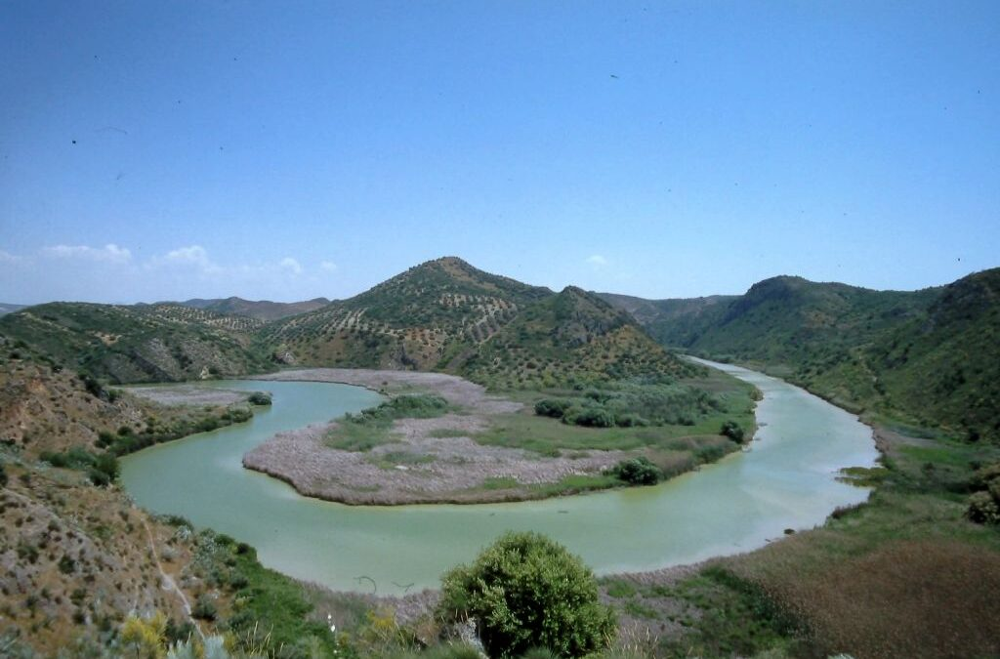

NOTICIAS
Foto de Manuel Gahete">
Manuel Gahete visita Lucena con su nuevo poemario
El escritor cordobés convoca a los amantes de las letras a la Biblioteca Municipal el próximo 7 de febrero para presentar "Epifanía".
Foto de un centro educativo">
Intercentros Lucena convoca a 400 escolares para celebrar el Día de la Paz
Colegios e institutos de Lucena, Jauja y las Navas participan en una yincana cultural diseñada en torno a valores como el respeto, el diálogo y la convivencia.
Foto de material civil de proteccion">
El Ayuntamiento de Lucena mejora el material de Protección Civil
Una subvención de la Junta de Andalucía permite adquirir nuevos transmisores y herramientas para uso en situaciones de emergencia.
Foto del El embalse de Malpasillo">
Intercentros Lucena convoca a 400 escolares para celebrar el Día de la Paz
Colegios e institutos de Lucena, Jauja y las Navas participan en una yincana cultural diseñada en torno a valores como el respeto, el diálogo y la convivencia.